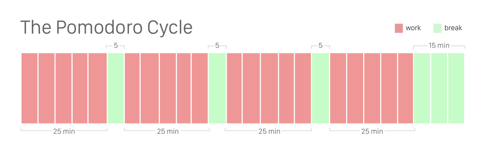

Pomodoro
by Devon ZuegelI love the feeling of flow, when I settle into my work and make steady, ruthless progress without distraction. Unfortunately, getting myself into this state is difficult. It usually happens when I am wearing my noise-cancelling headphones and I am at just at that point where my work is challenging but manageable and my mind is fully engaged but not overwhelmed. It also helps to have a bit of time pressure or a due date on the horizon.
These circumstances aren't always easy to replicate, particularly when I'm working on a personal project where there is no external force pushing me along. Without a sense of urgency, it's extremely rare for me to get into a flow that can't be interrupted by a facebook message, chocolate cravings, an incoming email, or remembering to get laundry out of the dryer.
I've experimented with many strategies to combat this flow problem. To ease my perfectionist tendencies while writing rough drafts, I built a tiny text editor called Zen Writer which disables the delete button, among a few other focus-oriented features. I use the Self Control app to block distracting websites, and I write out my goals whenever I sit down to get a chunk of work done to ensure I'm making the most out of my time. I continually tweak my text editor and terminal settings (though that may be more of a distraction than a productivity boost). However, these are relatively small in scope, so they've been met with only limited success.

The single most effective strategy I've discovered is the pomodoro technique. I've probably gotten more productivity gains from pomodoro alone than all of the other tools combined. The idea is to alternate 25-minute spurts of work and brief 5-minute breaks, and then after every fourth repetition you take a 15-minute break. You promise yourself to be totally focused during the work periods and totally disengaged from it during the breaks. Some people are extremely strict with the length of these periods. When I am strict I find that I can just chug through my work, but it takes a lot of discipline to do this. I'll be the first to admit that I don't always adhere to it perfectly. Even though I was really quite bad at the technique when I started using the it, my productivity immediately increased, and as I've become better at working with this strategy my output has continued to increase along with it.
Benefits of pomodoro
Activation Energy
Pomodoro works well for me is because it's so easy to mentally commit yourself to "just 25 minutes". It can be difficult to initially convince myself to settle down to work on a side project after a long day at work, even though it is something I really enjoy and want to do. My solution is to commit to just one pomodoro, and then after that if I'm still very tired I will let myself relax. But almost invariably that first pomodoro jump-starts me and gets me pumped up to work for hours. Activation energy is hard to come by, but pomodoros make it easy.
Always begin in the middle
The hardest part of any task is getting started. I always used to partition work according to my to-do list, giving myself a break only after checking off an item. I have some minor anxiety associated with starting a new task and re-creating a whole new flow, so the result was that I was always tempted to stretch out my breaks. Pomodoro offers a counterintutive solution to this problem: no matter where you are in your work, stop after 25 minutes. Then after your 5-minute break you just pick up where you left off, and if you finish that task before your next 25 minutes are up then you begin a new one. This can be immensely helpful. You rarely have to start a new project right after a break. Instead, you start right in the middle. You can leverage the win from finishing the last task to propel yourself into outlining and executing the next one.
Easily trackable progress
I'm very strict with my 25-minute stretches of work. If I get distracted for more than even a minute during one pomodoro, I cancel the entire thing and force myself to take a break. This motivates me to blast through those last few minutes with complete focus rather than allow my mind wander off. As a result, when I look at my daily pomodoro count, I know that I can add up those 25-minute periods to get a real sense of how much hardcore work time I've put in.
Required breaks pull me away from my work
Strict adherence to stopping for breaks sounds counterproductive. It's true that it sometimes forces me stop in the middle of a deep flow or while solving a really difficult problem. Initially, I was afraid that I would lose everything in my mental cache when I got up for my coffee break. However, over time I realized that – so long as I kept to the short 5-minute break – it actually got me really excited to get back to my work. Rather than another hour's slog I have to get through, work became a reward for strictly following my schedule.
Reminder to relax and move as well as to focus
Pomodoro solves my most chronic issue – mustering the discipline to intensely focus on my work. It also helps with another, opposite problem – remembering to step away from my desk to move and relax my eyes every once in a while. When I'm immersed in my work, I can forget to eat and stretch. In the short term this is fine and actually more productive, but after hours of working like this it really hurts my productivity. Pomodoros force me to take those breaks before I really need them so my mind is always fresh and I'm always high energy.
An added bonus is that pomodoros force me to recognize and pause when I've spent more than 25 minutes working to solve a particular problem. This provides two benefits: (a) during my break I can reconsider my approach to see if there's some better way I should tackle the problem, and (b) it gives me a natural opportuntiy to let my mind rest. Surprisingly often, I find that when I come back to my computer my subconscious has solved the problem for me.
Tips
As I've used pomodoro over the past few months, I've picked up some tricks for maximizing its benefit:
Take notes. It can be difficult to remember where to pick up after a break, especially after the 15-minute chunk. To remedy this issue, I make sure to spend the first 20 seconds of my break scribbling down my thoughts from the last sprint so that it's fresh in my mind for the next one. As an added benefit, it forces me to crystallize my thoughts and look at my project on a higher level. If you've ever heard of the term "rubber duckying", the embarrassing phenomenon of figuring out the solution as soon as you start explaining a bug in your code to a coworker, you know that it can be immensely helpful to get away from your text editor for a little while and explain things aloud. Simply writing out problems can have a similar effect, and it can even help you recognize problems in advance before you learn about them the hard way.
Work with a friend. Pomodoros are especially effective if you do them with a friend. The slight social pressure makes it embarrassing to get distracted during the work periods, and it's more fun to relax with someone you like rather than alone during the breaks. This is especially helpful when you first start using pomodoros and getting into the swing of things.
Use an app to track your pomodoro cycles. My personal favorite is an OSX app called Pomodoro One, but there are tons of apps on various platforms that are also very good.

Pomodoros have been immensely helpful in increasing my productivity and quality of work. It's easier to grasp complexity when you're fully focused, and it makes work more fun, too. Let me know what you think of pomodoro! I'd love to hear how other people use it and other strategies to hone their work.